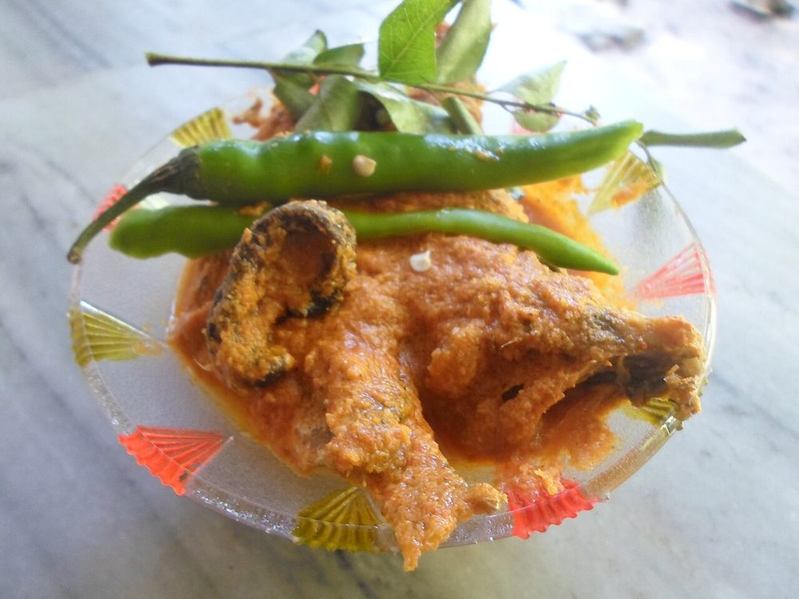

Masor Jhol
the everyday Assamese fish curry, thin and turmeric-yellow with potato and tomato

Prep15 min
Cook25 min
Total40 min
Serves4
Difficultyeasy
Contains: fish
Ingredients
Quantities for 4.
- 600g rohu or any firm river fish, cut into 2cm steaks on the bone Fish
- 1 1/2 tsp, used in two lots Turmeric
- 4 tbsp Mustard Oil
- 2 medium, quartered lengthways Potato
- 2, chopped Tomato
- 1 medium, finely sliced Onion
- 1 tbsp, ground to a paste Ginger
- 4 cloves, crushed Garlic
- 3, slit lengthways Green Chilli
- 1 tsp Panch Phoron
- 1 tsp Coriander Powder
- 600ml Water
- to taste Salt
- 2 tbsp, chopped Coriander Leavesoptional
Equipment
stovetop, kadhai
Before you start
- Rub the fish with turmeric and salt and leave it 10 minutes before frying. It firms the surface so the pieces do not break in the pan.
- Bring the fish to room temperature first. Cold pieces stick and tear.
- This is a thin curry, not a thick one — it should pool around the rice rather than sit on it.
Method
- Rub the fish with 1/2 tsp of the turmeric and 1 tsp salt and set it aside for 10 minutes.
- Heat the mustard oil in a kadhai until it smokes and the sharp smell fades, then take it off the heat for 30 seconds.Raw mustard oil tastes bitter in a curry. Smoking it once fixes that.
- Fry the fish in the hot oil, 2 minutes a side, until the edges are set and pale gold. Lift out onto a plate.You are firming the fish, not cooking it through — it finishes in the gravy.
- In the same oil, fry the potato quarters for 4 minutes until the cut faces are gold. Lift them out too.
- Drop the panch phoron into the oil and let it crackle for about 20 seconds until the fennel seeds turn a shade darker.
- Add the onion and cook 5 minutes until soft and just gold, then the ginger and garlic for 1 minute more, until the raw garlic smell goes.
- Stir in the tomato, the remaining 1 tsp turmeric and the coriander powder, and mash it about for 4 minutes until the tomato collapses and oil beads at the edge of the pan.
- Pour in the water, return the potato, bring to a boil and simmer 10 minutes until a knife goes into the potato without resistance.
- Slide the fish back in with the green chillies and simmer uncovered 5 minutes. Do not stir — shake the pan by the handle instead.A spoon in the pan at this stage will shred the fish.
- Take it off the heat, rest 5 minutes, scatter the coriander leaves and serve with hot rice.
Storage
Keeps 2 days refrigerated and the flavour deepens overnight. Reheat gently in a wide pan without stirring; do not boil, or the fish falls apart.
Nutrition Good estimate
| Per serving389 g | Per 100 g | |
|---|---|---|
| Calories | 401 kcal | 103 kcal |
| Protein | 34.5 g | 8.9 g |
| Carbohydrate | 26.5 g | 6.8 g |
| of which sugars | 5.4 g | 1.4 g |
| Fibre | 4.4 g | 1.1 g |
| Fat | 17.8 g | 4.6 g |
| of which saturated | 2.3 g | 0.6 g |
| of which unsaturated | 13.6 g | 3.5 g |
Worked out from the listed quantities; most of the ingredient list could be weighed. Some ingredients have no exact match in the nutrient database and use the nearest equivalent: panch phoron. Estimated from raw ingredients using USDA FoodData Central. Cooking changes are not modelled, and added salt is excluded, so sodium is not given.
Recipe v1.0.0, last updated 2026-07-31. Curated for Khaana and kept under version control.